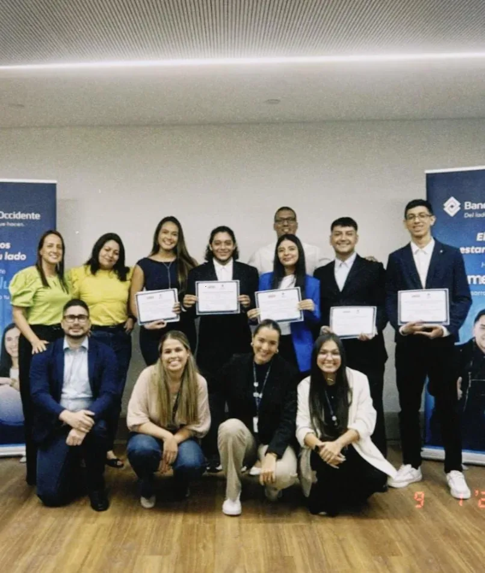

Banco de Occidente
Ganador del retoReto de consultoría organizacional UAO y Banco de Occidente, 2026
Cocreé un plan estratégico de comunicación integral para el proyecto B1 del Banco, enfocado en la comunicación interna y la cultura organizacional.